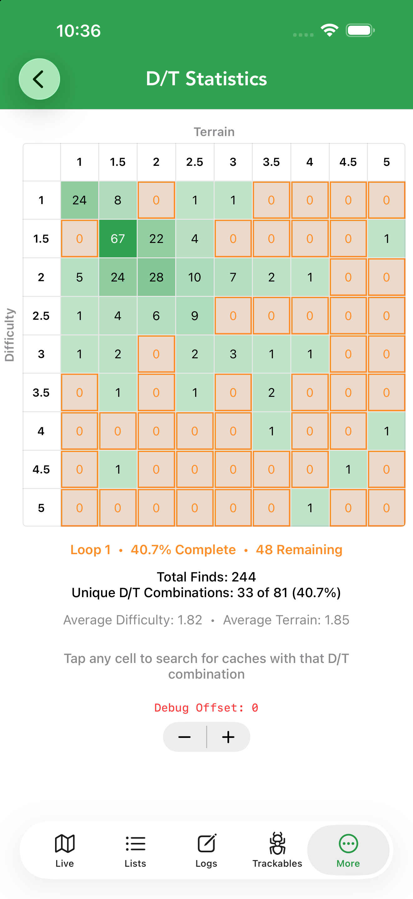

D/T Grid
Every find plotted on the 9×9 Difficulty/Terrain matrix — see which of the 81 combinations you still need, and search for caches that fill the gaps.

The grid
The D/T Statistics grid plots your finds on the 9×9 Difficulty/Terrain matrix — a must for Fizzy-style challenge caches. Below the grid you’ll see your loop progress (percent complete and combinations remaining), total finds, unique D/T combinations out of 81, and your average difficulty and terrain. Tap any cell to search for caches with that D/T combination and fill the gaps.
Spotted a problem, or have an idea? Bug reports and feature requests are tracked on GitHub.